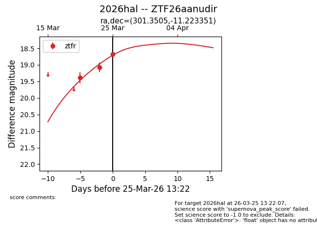
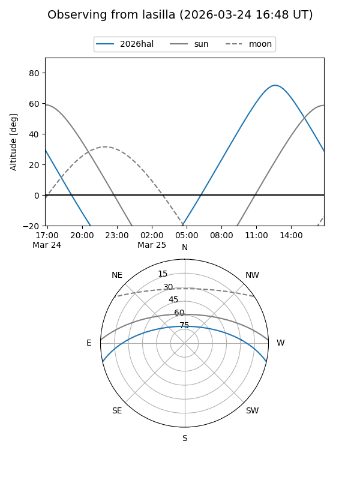
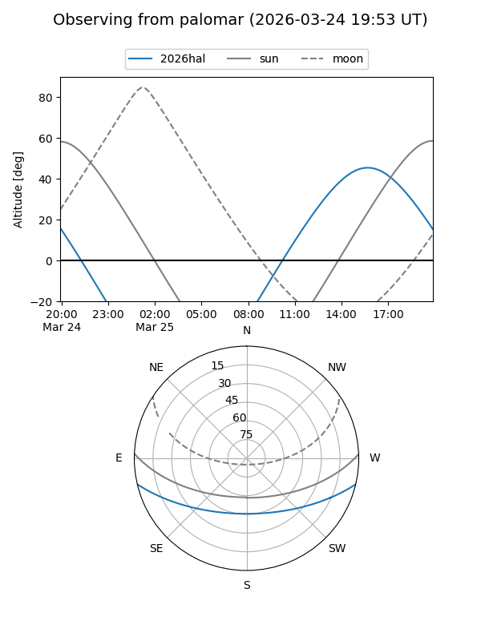
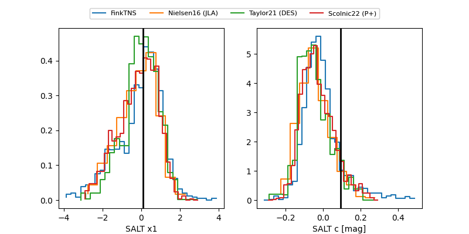

2026hal
Target 2026hal at 2026-03-25 13:25
Aliases and brokers:
FINK: link
Lasair: link
ALeRCE: link
TNS: link
YSE: link
alt names
ZTF26aanudir (ztf,fink_ztf)
2026hal (tns,yse)
Coordinates:
equatorial (ra, dec) = 301.3505,-11.22335
equatorial (HMS+DMS) = 20:05:24.13,-11:13:24.07
galactic (l, b) = (31.0005,-21.44558)
Flags:
Photometry:
last ztfr=18.68
3 ztfr detections
Lightcurve

Visibility


Additional plots
